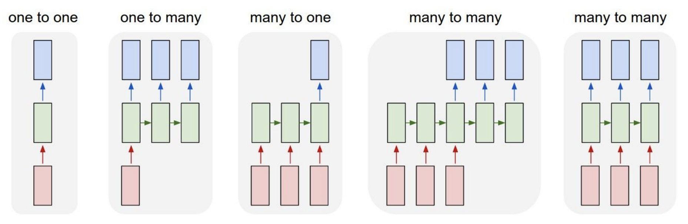
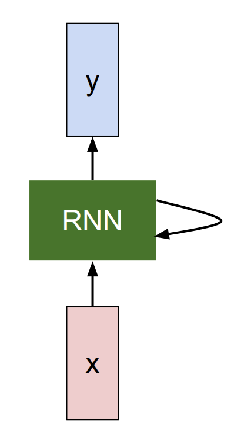
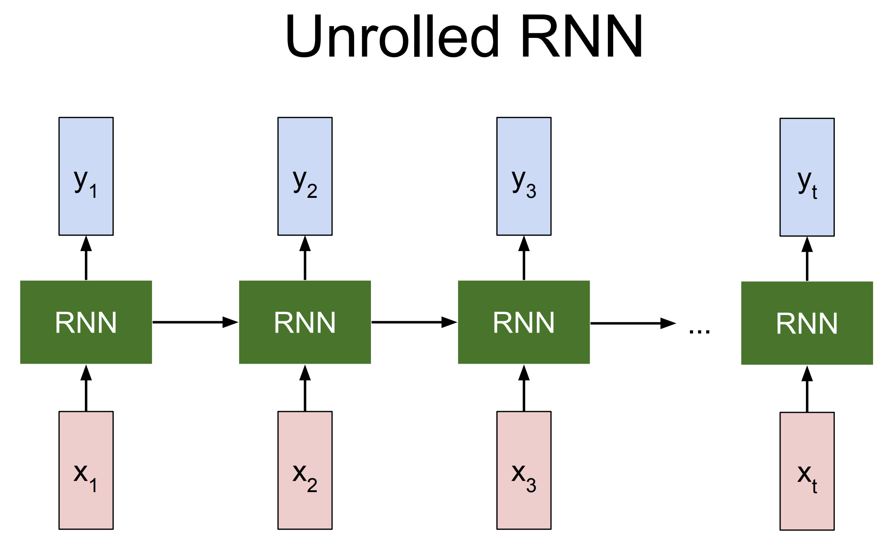
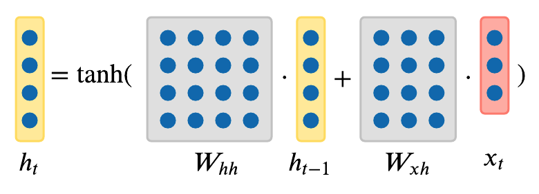
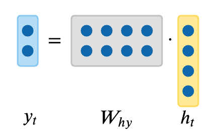
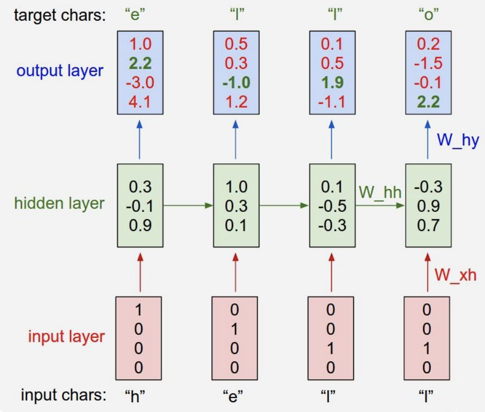
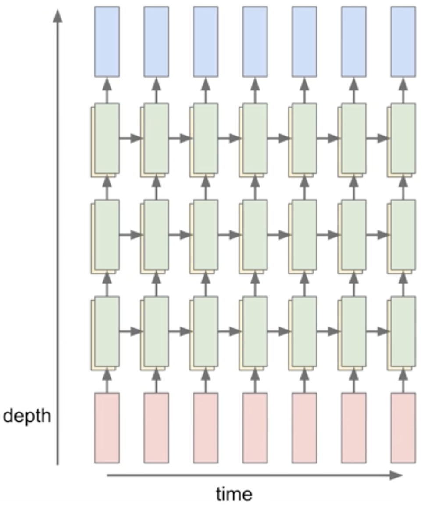
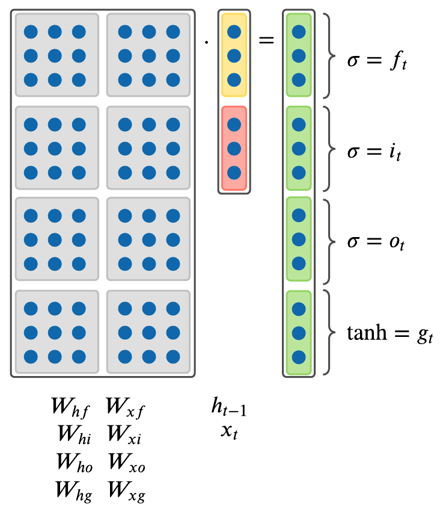
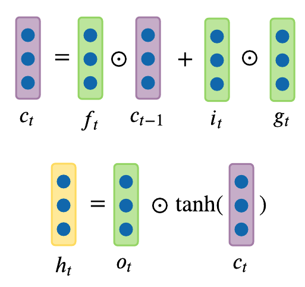
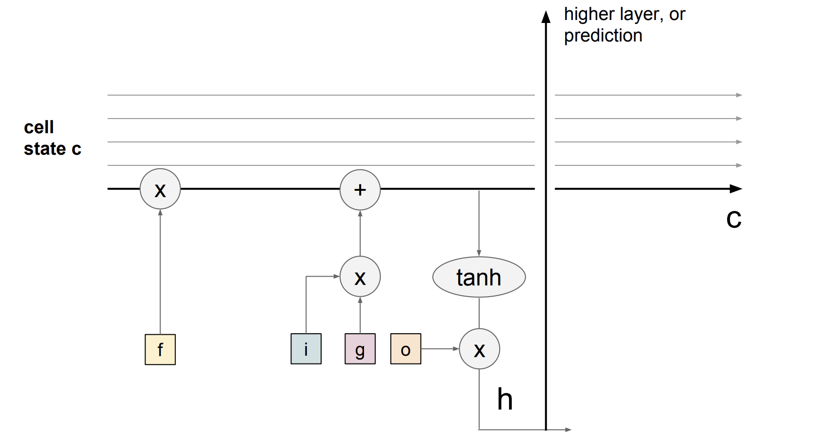

Aula 07 · Redes Neurais Recorrentes
Redes Neurais Recorrentes
⚠️ Este conteúdo é uma tradução para português, gerada automaticamente por IA, a partir do material original em inglês do curso CS231n (Stanford University). Consulte o link "Fonte original" abaixo para o texto original.
Fonte original (inglês): Introduction to RNN · CS231n, Stanford University ↗
Introdução às RNNs
Nesta nota de aula, vamos falar sobre Redes Neurais Recorrentes (RNNs). Uma grande vantagem das RNNs é a flexibilidade que elas oferecem na forma de conectar a arquitetura da rede neural. Normalmente, quando trabalhamos com redes neurais (Figura 1), recebemos um vetor de entrada de tamanho fixo (vermelho), o processamos com algumas camadas ocultas (verde) e produzimos um vetor de saída de tamanho fixo (azul), como mostra o modelo mais à esquerda (Redes Neurais "Vanilla") na Figura 1. Enquanto Redes Neurais "Vanilla" recebem uma única entrada e produzem um rótulo para aquela imagem, há tarefas em que o modelo produz uma sequência de saídas, como mostra o modelo um-para-muitos na Figura 1. Redes Neurais Recorrentes nos permitem operar sobre sequências de entrada, de saída ou de ambas ao mesmo tempo.
- Um exemplo de modelo um-para-muitos é a legendagem de imagens, em que recebemos uma imagem de tamanho fixo e produzimos, por meio de uma RNN, uma sequência de palavras que descreve o conteúdo dessa imagem (segundo modelo na Figura 1).
- Um exemplo de tarefa muitos-para-um é a predição de ações, em que olhamos para uma sequência de quadros de vídeo em vez de uma única imagem e produzimos um rótulo da ação que estava acontecendo no vídeo, como mostra o terceiro modelo na Figura 1. Outro exemplo de tarefa muitos-para-um é a classificação de sentimento em PLN, em que recebemos a sequência de palavras de uma frase e classificamos qual é o sentimento dessa frase (por exemplo, positivo ou negativo).
- Um exemplo de tarefa muitos-para-muitos é a legendagem de vídeo, em que a entrada é uma sequência de quadros de vídeo e a saída é uma legenda que descreve o que havia no vídeo, como mostra o quarto modelo na Figura 1. Outro exemplo de tarefa muitos-para-muitos é a tradução automática em PLN, em que uma RNN recebe a sequência de palavras de uma frase em inglês e precisa produzir a sequência de palavras de uma frase em francês.
- Há também uma variação da tarefa muitos-para-muitos, mostrada no último modelo da Figura 1, em que o modelo gera uma saída a cada passo de tempo. Um exemplo dessa tarefa é a classificação de vídeo em nível de quadro, em que o modelo classifica cada quadro do vídeo em alguma das classes. Note que não queremos que essa predição seja função apenas do passo de tempo atual (o quadro atual do vídeo), mas também de todos os passos de tempo (quadros) que vieram antes neste vídeo.
Em geral, RNNs nos permitem conectar uma arquitetura em que a predição em cada passo de tempo é função de todos os passos de tempo anteriores.

Por que as ConvNets existentes são insuficientes?
As ConvNets existentes são insuficientes para lidar com tarefas cujas entradas e saídas têm sequências de comprimento variável. No exemplo da legendagem de vídeo, as entradas têm um número variável de quadros (por exemplo, vídeos de 10 minutos e de 10 horas) e as saídas são legendas de comprimento variável. ConvNets só recebem entradas com largura e altura fixas e não generalizam para entradas de tamanhos diferentes. Para resolver esse problema, introduzimos as Redes Neurais Recorrentes (RNNs).
Rede Neural Recorrente
Uma RNN é basicamente uma caixa-preta (esquerda da Figura 2) com um "estado interno" que é atualizado conforme uma sequência é processada. A cada passo de tempo, alimentamos a RNN com um vetor de entrada, e ela modifica esse estado em função do que recebe. Quando ajustamos os pesos da RNN, ela apresenta comportamentos diferentes em termos de como seu estado evolui ao receber essas entradas. Também queremos produzir uma saída com base no estado da RNN, então podemos produzir esses vetores de saída em cima da RNN (como mostra a Figura 2).
Se desenrolarmos um modelo de RNN (direita da Figura 2), temos entradas (por exemplo, quadros de vídeo) em diferentes passos de tempo, mostradas como \(x_1, x_2, x_3\) ... \(x_t\). A cada passo de tempo, a RNN recebe duas entradas (um quadro de entrada \(x_i\) e a representação anterior do que ela viu até então, isto é, o histórico) para gerar uma saída \(y_i\) e atualizar seu histórico, que é propagado adiante ao longo do tempo. Todos os blocos de RNN na Figura 2 (direita) são o mesmo bloco, que compartilha os mesmos parâmetros, mas tem entradas e históricos diferentes a cada passo de tempo.


Mais precisamente, uma RNN pode ser representada como uma fórmula de recorrência de alguma função \(f_W\) com parâmetros \(W\):
$$ h_t = f_W(h_{t-1}, x_t) $$
em que, a cada passo de tempo, ela recebe um estado anterior na forma do vetor \(h_{t-1}\), do passo de tempo anterior \(t-1\), e o vetor de entrada atual \(x_t\), para produzir o estado atual na forma do vetor \(h_t\). Uma função fixa \(f_W\) com pesos \(W\) é aplicada em cada passo de tempo, e isso nos permite usar a Rede Neural Recorrente em sequências sem precisar fixar o tamanho da sequência, porque aplicamos exatamente a mesma função em cada passo de tempo, não importa o comprimento das sequências de entrada ou de saída.
Na forma mais simples de RNN, que chamamos de RNN Vanilla, a rede é apenas um único estado oculto \(h\), e usamos uma fórmula de recorrência que basicamente diz como atualizar o estado oculto \(h\) em função do estado oculto anterior \(h_{t-1}\) e da entrada atual \(x_t\). Em particular, temos as matrizes de pesos \(W_{hh}\) e \(W_{xh}\), que projetam o estado oculto \(h_{t-1}\) do passo de tempo anterior e a entrada atual \(x_t\). Essas projeções são então somadas e comprimidas pela função \(tanh\) para atualizar o estado oculto \(h_t\) no passo de tempo \(t\). Essa recorrência nos diz como \(h\) muda em função do seu histórico e também da entrada atual neste passo de tempo:
$$ h_t = tanh(W_{hh}h_{t-1} + W_{xh}x_t) $$

Podemos basear as predições em \(h_t\) usando apenas mais uma projeção matricial sobre o estado oculto. Este é o caso completo mais simples em que se pode conectar uma rede neural:
$$ y_t = W_{hy}h_t $$

Até aqui mostramos a RNN em termos dos vetores abstratos \(x, h, y\); na próxima seção, porém, podemos dar semântica a esses vetores.
Exemplo de RNN: modelo de linguagem em nível de caractere
Uma das formas mais simples de usar uma RNN é num modelo de linguagem em nível de caractere, por ser intuitivo de entender. Essa RNN funciona assim: alimentamos a RNN com uma sequência de caracteres e, a cada passo de tempo, pedimos que ela preveja o próximo caractere da sequência. A predição da RNN tem a forma de uma distribuição de pontuações sobre os caracteres do vocabulário, indicando o que a RNN acha que deve vir a seguir na sequência que viu até então.
Suponha, num exemplo bem simples (Figura 3), que temos como sequência de treinamento apenas a string \(\text{"hello"}\), e um vocabulário \(V \in \{\text{"h"}, \text{"e"}, \text{"l"}, \text{"o"}\}\) de 4 caracteres em todo o conjunto de dados. Vamos tentar fazer uma RNN aprender a prever o próximo caractere da sequência nesses dados de treinamento.

Como mostra a Figura 3, alimentamos a RNN com um caractere de cada vez: primeiro \(\text{"h"}\), depois \(\text{"e"}\), depois \(\text{"l"}\) e, por fim, \(\text{"l"}\). Todos os caracteres são codificados como um vetor one-hot, em que apenas um bit do vetor é ligado para cada caractere único do vocabulário. Por exemplo:
$$ \begin{bmatrix}1 \\ 0 \\ 0 \\ 0 \end{bmatrix} = \text{"h"}\ \ \begin{bmatrix}0 \\ 1 \\ 0 \\ 0 \end{bmatrix} = \text{"e"}\ \ \begin{bmatrix}0 \\ 0 \\ 1 \\ 0 \end{bmatrix} = \text{"l"}\ \ \begin{bmatrix}0 \\ 0 \\ 0 \\ 1 \end{bmatrix} = \text{"o"} $$
Em seguida, usamos a fórmula de recorrência da seção anterior em cada passo de tempo. Suponha que começamos com \(h\) como um vetor de tamanho 3, todo de zeros. Usando essa fórmula de recorrência fixa, chegamos a uma representação tridimensional do próximo estado oculto \(h\) que, a qualquer momento, resume basicamente todos os caracteres vistos até então:
$$ \begin{aligned} \begin{bmatrix}0.3 \\ -0.1 \\ 0.9 \end{bmatrix} &= f_W(W_{hh}\begin{bmatrix}0 \\ 0 \\ 0 \end{bmatrix} + W_{xh}\begin{bmatrix}1 \\ 0 \\ 0 \\ 0 \end{bmatrix}) \ \ \ \ &(1) \\ \begin{bmatrix}1.0 \\ 0.3 \\ 0.1 \end{bmatrix} &= f_W(W_{hh}\begin{bmatrix}0.3 \\ -0.1 \\ 0.9 \end{bmatrix} + W_{xh}\begin{bmatrix}0 \\ 1 \\ 0 \\ 0 \end{bmatrix}) \ \ \ \ &(2) \\ \begin{bmatrix}0.1 \\ -0.5 \\ -0.3 \end{bmatrix} &= f_W(W_{hh}\begin{bmatrix}1.0 \\ 0.3 \\ 0.1 \end{bmatrix} + W_{xh}\begin{bmatrix}0 \\ 0 \\ 1 \\ 0 \end{bmatrix}) \ \ \ \ &(3) \\ \begin{bmatrix}-0.3 \\ 0.9 \\ 0.7 \end{bmatrix} &= f_W(W_{hh}\begin{bmatrix}0.1 \\ -0.5 \\ -0.3 \end{bmatrix} + W_{xh}\begin{bmatrix}0 \\ 0 \\ 1 \\ 0 \end{bmatrix}) \ \ \ \ &(4) \end{aligned} $$
Conforme aplicamos essa recorrência a cada passo de tempo, prevemos qual deve ser o próximo caractere da sequência em cada passo. Como temos quatro caracteres no vocabulário \(V\), prevemos um vetor de logits de 4 dimensões a cada passo de tempo.
Como mostra a Figura 3, no primeiro passo de tempo alimentamos \(\text{"h"}\), e a RNN, com a configuração atual dos pesos, calculou um vetor de logits:
$$ \begin{bmatrix}1.0 \\ 2.2 \\ -3.0 \\ 4.1 \end{bmatrix} \rightarrow \begin{bmatrix}\text{"h"} \\ \text{"e"} \\ \text{"l"}\\ \text{"o"} \end{bmatrix} $$
em que a RNN considera que o próximo caractere \(\text{"h"}\) tem verossimilhança \(1.0\) de vir a seguir, \(\text{"e"}\) tem \(2.2\), \(\text{"e"}\) tem \(-3.0\) e \(\text{"o"}\) tem \(4.1\). Neste caso, a RNN sugere incorretamente que \(\text{"o"}\) deve vir a seguir, já que a pontuação \(4.1\) é a mais alta. Porém, é claro, sabemos que nesta sequência de treinamento \(\text{"e"}\) deve seguir \(\text{"h"}\), então a pontuação \(2.2\) é a resposta correta, destacada em verde na Figura 3, e queremos que ela seja alta e que todas as outras pontuações sejam baixas. A cada passo de tempo, temos um alvo para o próximo caractere da sequência; portanto, o sinal de erro é retropropagado como um gradiente da função de perda pelas conexões. Como função de perda, poderíamos escolher um classificador softmax, por exemplo, de modo que todas essas perdas fluam de cima para baixo para calcular os gradientes em todas as matrizes de pesos e descobrir como ajustá-las para que as probabilidades corretas saiam da RNN. De forma semelhante, podemos imaginar como escalar o treinamento do modelo para um conjunto de treinamento maior.
RNNs multicamadas
Até aqui mostramos RNNs com apenas uma camada. Mas não estamos limitados a arquiteturas de uma única camada. Uma das formas como as RNNs são usadas hoje é de maneira mais complexa: RNNs podem ser empilhadas em múltiplas camadas, o que dá mais profundidade, e empiricamente arquiteturas mais profundas tendem a funcionar melhor (Figura 4).

Por exemplo, na Figura 4, há três RNNs separadas, cada uma com seu próprio conjunto de pesos. As três RNNs estão empilhadas umas sobre as outras, de modo que a entrada da segunda RNN (segunda camada de RNN na Figura 4) é o vetor de estado oculto da primeira RNN (primeira camada de RNN na Figura 4). Todas as RNNs empilhadas são treinadas em conjunto, e o diagrama da Figura 4 representa um único grafo computacional.
Long-Short Term Memory (LSTM)
Até aqui vimos apenas uma fórmula de recorrência simples para a RNN Vanilla. Na prática, raramente usamos a fórmula da RNN Vanilla. Em vez disso, usamos o que chamamos de RNN Long-Short Term Memory (LSTM).
Fluxo de gradiente na RNN Vanilla e o problema do gradiente que desaparece
Um bloco de RNN recebe a entrada \(x_t\) e a representação oculta anterior \(h_{t-1}\) e aprende uma transformação, que então passa por tanh para produzir a representação oculta \(h_{t}\) do próximo passo de tempo e a saída \(y_{t}\), como mostra a equação abaixo.
$$ h_t = tanh(W_{hh}h_{t-1} + W_{xh}x_t) $$
Para a retropropagação, vamos examinar como a saída no último passo de tempo afeta os pesos no primeiro passo de tempo. A derivada parcial de \(h_t\) em relação a \(h_{t-1}\) é escrita como:
$$ \frac{\partial h_t}{\partial h_{t-1}} = tanh^{'}(W_{hh}h_{t-1} + W_{xh}x_t)W_{hh} $$
Atualizamos os pesos \(W_{hh}\) obtendo a derivada da perda no último passo de tempo \(L_{t}\) em relação a \(W_{hh}\).
$$ \begin{aligned} \frac{\partial L_{t}}{\partial W_{hh}} = \frac{\partial L_{t}}{\partial h_{t}} \frac{\partial h_{t}}{\partial h_{t-1} } \dots \frac{\partial h_{1}}{\partial W_{hh}} \\ = \frac{\partial L_{t}}{\partial h_{t}}(\prod_{t=2}^{T} \frac{\partial h_{t}}{\partial h_{t-1}})\frac{\partial h_{1}}{\partial W_{hh}} \\ = \frac{\partial L_{t}}{\partial h_{t}}(\prod_{t=2}^{T} tanh^{'}(W_{hh}h_{t-1} + W_{xh}x_t)W_{hh}^{T-1})\frac{\partial h_{1}}{\partial W_{hh}} \\ \end{aligned} $$
- Gradiente que desaparece: vemos que \(tanh^{'}(W_{hh}h_{t-1} + W_{xh}x_t)\) será quase sempre menor que 1, porque tanh está sempre entre menos um e um. Assim, conforme \(t\) aumenta (isto é, com mais passos de tempo), o gradiente (\(\frac{\partial L_{t}}{\partial W}\)) diminui e se aproxima de zero. Isso leva ao problema do gradiente que desaparece, em que os gradientes de passos de tempo futuros raramente afetam os gradientes do primeiro passo de tempo. Isso é um problema quando modelamos longas sequências de entrada, porque as atualizações ficam extremamente lentas.
- Removendo a não linearidade (tanh): se removermos a não linearidade (tanh) para resolver o problema do gradiente que desaparece, ficamos com
$$ \begin{aligned} \frac{\partial L_{t}}{\partial W} = \frac{\partial L_{t}}{\partial h_{t}}(\prod_{t=2}^{T} W_{hh}^{T-1})\frac{\partial h_{1}}{\partial W} \end{aligned} $$
- Gradientes que explodem: se o maior valor singular de \(W_{hh}\) for maior que 1, os gradientes explodem, e o modelo recebe gradientes muito grandes vindos de passos de tempo futuros. A explosão de gradientes costuma levar a gradientes NaN.
- Gradientes que desaparecem: se o maior valor singular de \(W_{hh}\) for menor que 1, temos o problema do gradiente que desaparece mencionado acima, que torna o aprendizado significativamente mais lento.
Na prática, podemos tratar o problema da explosão de gradientes por meio do recorte de gradiente (gradient clipping), que limita os valores grandes do gradiente a um máximo. Porém, como o problema do gradiente que desaparece continua existindo quando o maior valor singular da matriz \(W_{hh}\) é menor que um, a LSTM foi projetada para evitar esse problema.
Formulação da LSTM
A seguir está a formulação precisa da LSTM. No passo \(t\), há um estado oculto \(h_t\) e um estado de célula \(c_t\). Tanto \(h_t\) quanto \(c_t\) são vetores de tamanho \(n\). Uma diferença entre a LSTM e a RNN Vanilla é que a LSTM tem esse estado de célula adicional \(c_t\); intuitivamente, podemos pensar que \(c_t\) armazena informação de longo prazo. A LSTM pode ler, apagar e escrever informação nessa célula \(c_t\). A LSTM altera a célula \(c_t\) por meio de três portas especiais: \(i, f, o\), que correspondem às portas de "entrada" (input), "esquecimento" (forget) e "saída" (output). Os valores dessas portas variam de fechada (0) a aberta (1). Todas as portas \(i, f, o\) são vetores de tamanho \(n\).
A cada passo de tempo, temos um vetor de entrada \(x_t\), o estado oculto anterior \(h_{t-1}\) e o estado de célula anterior \(c_{t-1}\), e a LSTM calcula o próximo estado oculto \(h_t\) e o próximo estado de célula \(c_t\) no passo de tempo \(t\) da seguinte forma:
$$ \begin{aligned} f_t &= \sigma(W_{hf}h_{t_1} + W_{xf}x_t) \\ i_t &= \sigma(W_{hi}h_{t_1} + W_{xi}x_t) \\ o_t &= \sigma(W_{ho}h_{t_1} + W_{xo}x_t) \\ g_t &= \text{tanh}(W_{hg}h_{t_1} + W_{xg}x_t) \\ \end{aligned} $$

$$ \begin{aligned} c_t &= f_t \odot c_{t-1} + i_t \odot g_t \\ h_t &= o_t \odot \text{tanh}(c_t) \\ \end{aligned} $$

em que \(\odot\) é o produto de Hadamard, elemento a elemento. Nas fórmulas acima, \(g_t\) é um cálculo intermediário, usado depois com a porta \(o\).
Como os valores das portas \(f, i, o\) variam de 0 a 1, porque foram comprimidos pela função sigmoide \(\sigma\), ao multiplicá-los elemento a elemento vemos que:
- Porta de esquecimento: a porta de esquecimento \(f_t\) no passo de tempo \(t\) controla quanta informação precisa ser "removida" do estado de célula anterior \(c_{t-1}\). Essa porta aprende a apagar representações ocultas de passos de tempo anteriores, e é por isso que a LSTM tem duas representações ocultas: \(h_t\) e o estado de célula \(c_t\). Esse \(c_t\) é propagado ao longo do tempo e aprende se deve esquecer ou não o estado de célula anterior.
- Porta de entrada: a porta de entrada \(i_t\) no passo de tempo \(t\) controla quanta informação precisa ser "adicionada" ao próximo estado de célula \(c_t\) a partir do estado oculto anterior \(h_{t-1}\) e da entrada \(x_t\). Em vez de tanh, a porta de "entrada" \(i\) usa uma função sigmoide, que converte as entradas em valores entre zero e um. Ela serve como um interruptor, em que os valores são quase sempre zero ou quase sempre um. Essa porta de "entrada" decide se aproveita a saída da RNN produzida pela porta "gate" \(g\), multiplicando essa saída pela porta de entrada \(i\).
- Porta de saída: a porta de saída \(o_t\) no passo de tempo \(t\) controla quanta informação precisa ser "mostrada" como saída no estado oculto atual \(h_t\).
A ideia central da LSTM é o estado de célula, a linha horizontal que passa entre os passos de tempo recorrentes. Pode-se imaginar o estado de célula como uma espécie de rodovia de informação que atravessa toda a cadeia, com apenas algumas interações lineares menores. Com a formulação acima, é fácil a informação simplesmente fluir por essa rodovia (Figura 5). Assim, mesmo com várias LSTMs empilhadas, podemos ter um fluxo de gradiente ininterrupto, em que os gradientes voltam pelos estados de célula, em vez de pelos estados ocultos \(h\), sem desaparecer a cada passo de tempo.
Isso resolve em grande parte o problema dos gradientes que desaparecem ou explodem, descrito acima. A Figura 5 também mostra que o gradiente contém um vetor de ativações da porta de "esquecimento". Isso permite controlar melhor os valores dos gradientes, por meio de atualizações adequadas dos parâmetros dessa porta.

A LSTM resolve o problema do gradiente que desaparece?
A arquitetura LSTM facilita que a RNN preserve informação ao longo de muitos passos de tempo recorrentes. Por exemplo, se a porta de esquecimento estiver em 1 e a porta de entrada em 0, a informação do estado de célula será sempre preservada ao longo de muitos passos de tempo recorrentes. Numa RNN Vanilla, ao contrário, é bem mais difícil preservar informação nos estados ocultos ao longo dos passos de tempo usando apenas uma única matriz de pesos.
LSTMs não garantem que não haverá problemas de gradientes que desaparecem ou explodem, mas oferecem uma forma mais fácil de o modelo aprender dependências de longa distância.